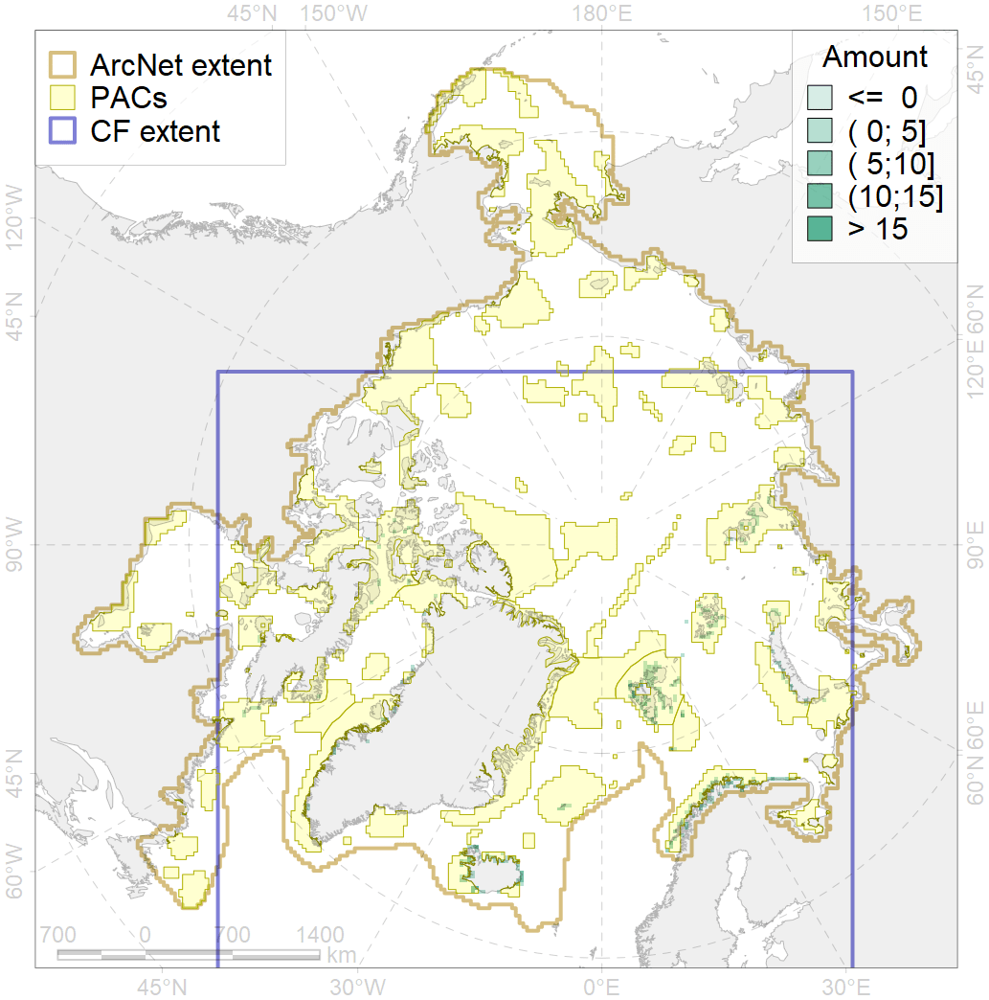
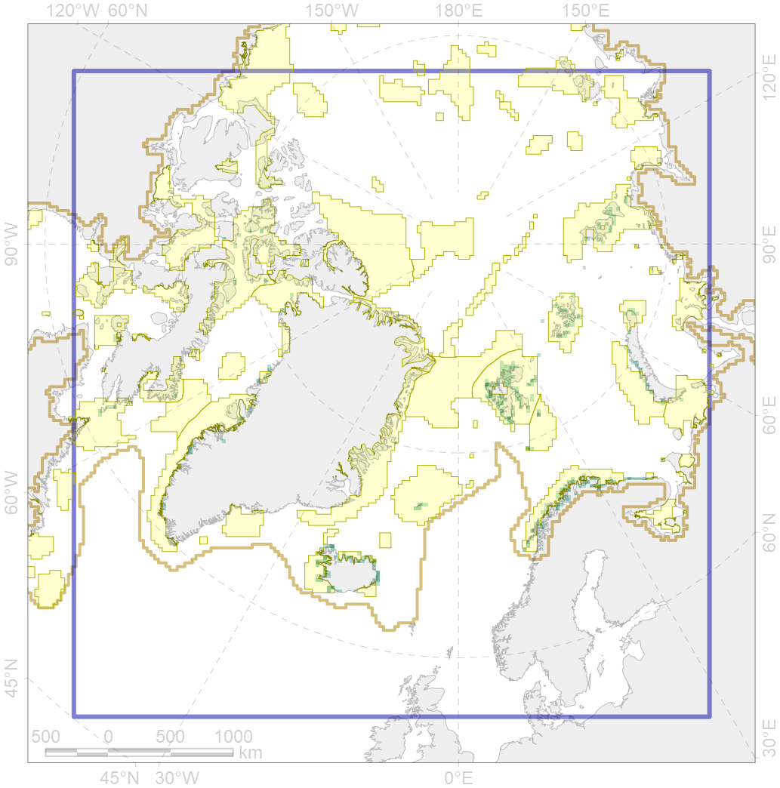

6047

| CF ID | 6047 |
| CF Name | Black-legged kittiwake (Rissa tridactyla tridactyla) breeding colonies |
| Time Period | 1980-2004 |
| Source(s) | Circumpolar Seabird Data Portal http://axiom.seabirds.net/maps/js/seabirds.php?app=circumpolar#z=2&ll=NaN,0.00000 |
| Seasonality | May-September |
| Depth Horizon | ≥0 m |
| Methodology | Field Data |
| Author Name | Gavrilo, Tertitski |
| Notes | |
| Conservation Target Set in the Scenario | 0.648 |
| Conservation Target Achieved in the Scenario | 0.753 (Scenario: 116.2%) |
| PAC ID | Proportion in the PAC | Contribution to ArcNet Target Achievement | PAC’s Contribution to the Achieved Target |
|---|---|---|---|
| 14 | 1.5% | 2.0% | 1.8% |
| 15 | 0.1% | 0.1% | 0.1% |
| 19 | 0.7% | 1.0% | 0.9% |
| 20 | 0.2% | 0.3% | 0.3% |
| 21 | 1.2% | 1.6% | 1.4% |
| 22 | 3.3% | 5.1% | 4.4% |
| 25 | 0.2% | 0.3% | 0.3% |
| 27 | 13.8% | 19.1% | 16.4% |
| 30 | 25.6% | 39.1% | 33.7% |
| 31 | 4.7% | 7.3% | 6.3% |
| 34 | 2.0% | 3.0% | 2.6% |
| 38 | 13.1% | 17.4% | 15.0% |
| 39 | 0.8% | 1.2% | 1.0% |
| 40 | 2.6% | 3.0% | 2.6% |
| 41 | 2.9% | 2.1% | 1.8% |
| 44 | 1.3% | 1.2% | 1.1% |
| 46 | 0.2% | 0.3% | 0.3% |
| 48 | 0.3% | 0.4% | 0.3% |
| 51 | 0.4% | 0.7% | 0.6% |
| 52 | 2.1% | 3.3% | 2.8% |
| 73 | 0.1% | 0.2% | 0.2% |
| 76 | 0.6% | 0.9% | 0.7% |
| inner | 77.7% | 109.6% | 94.3% |
| outer | 22.3% | 6.6% | 5.7% |